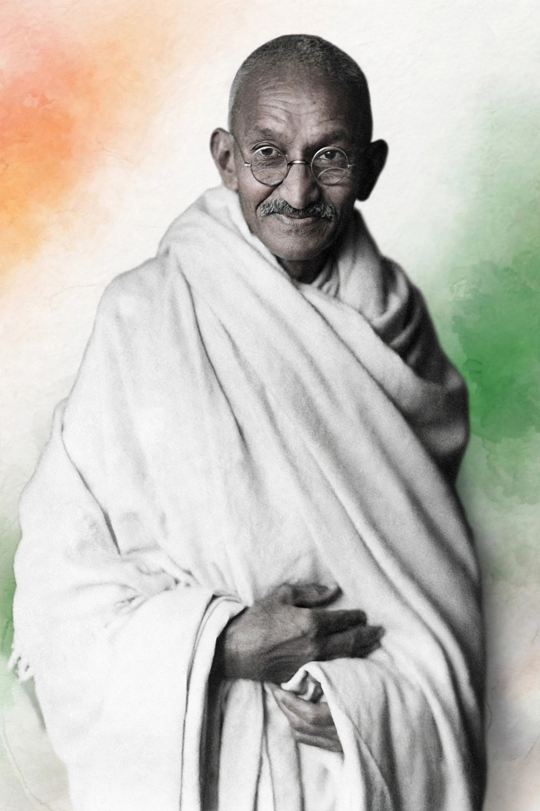
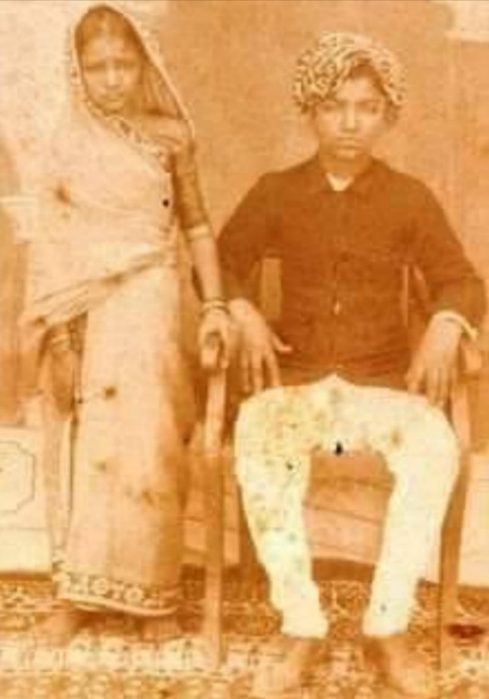
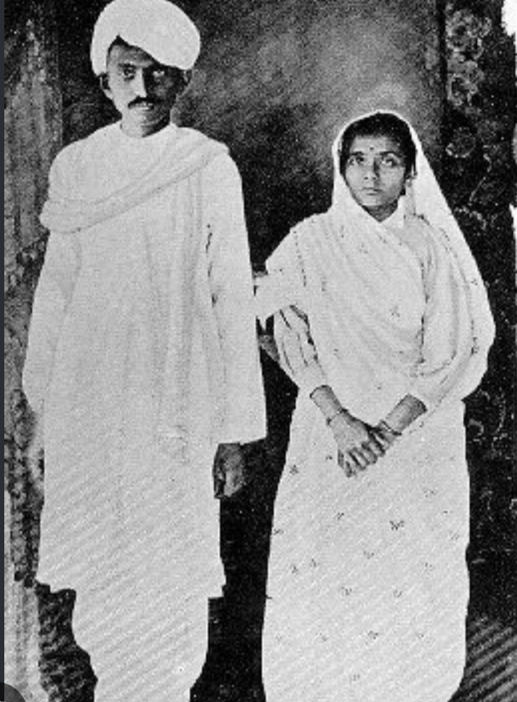
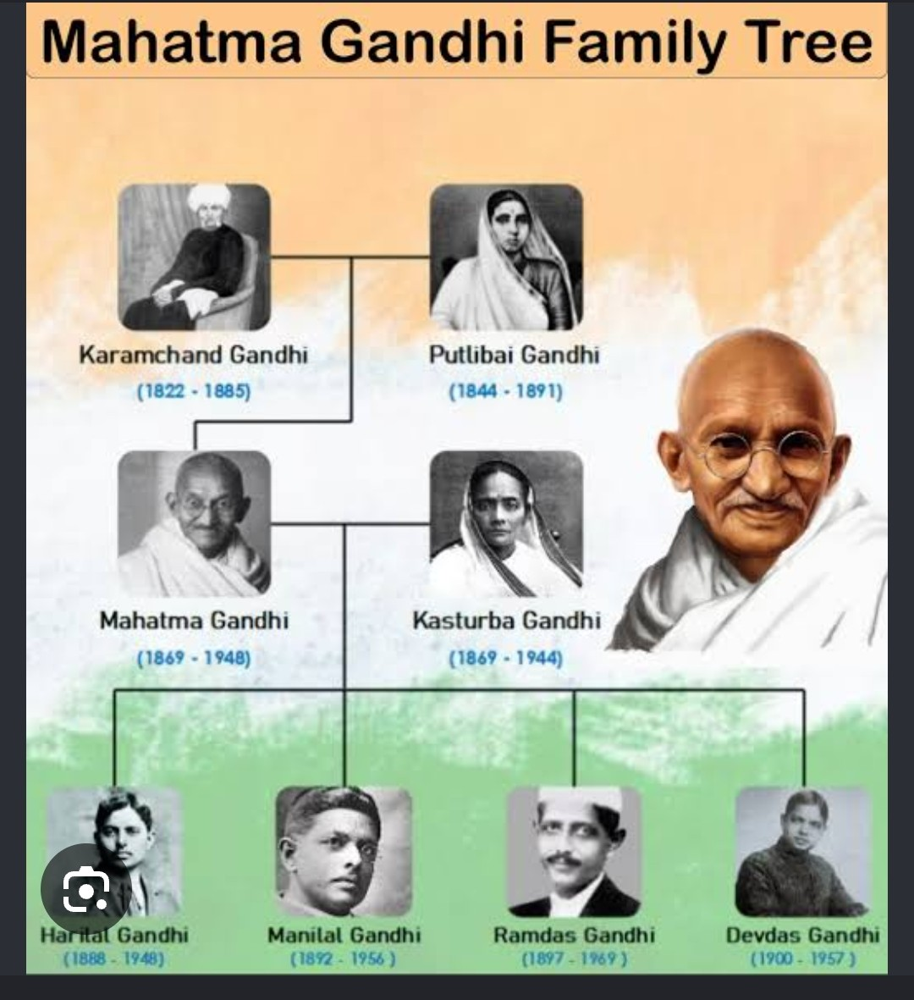
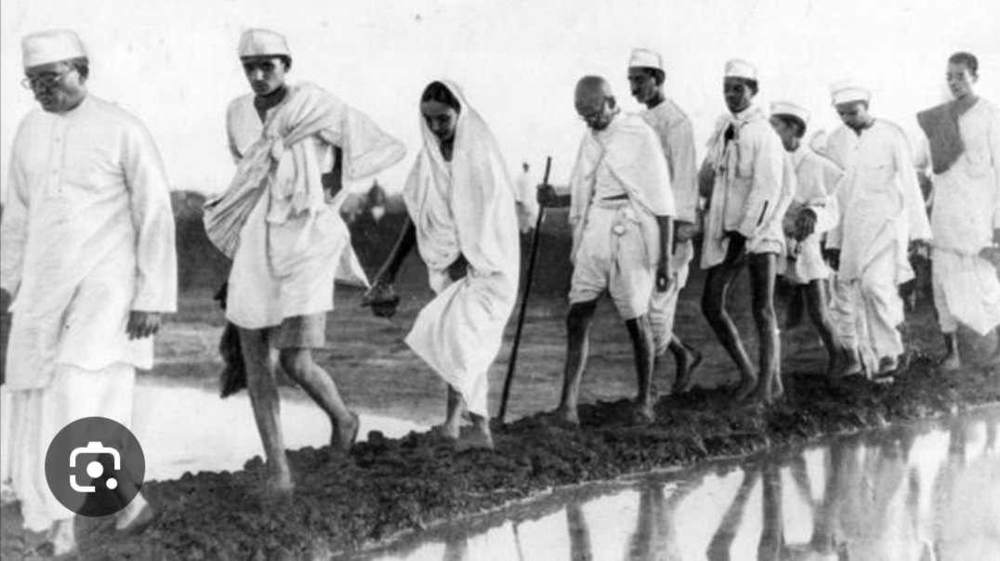
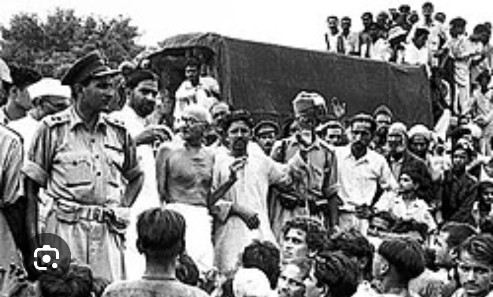
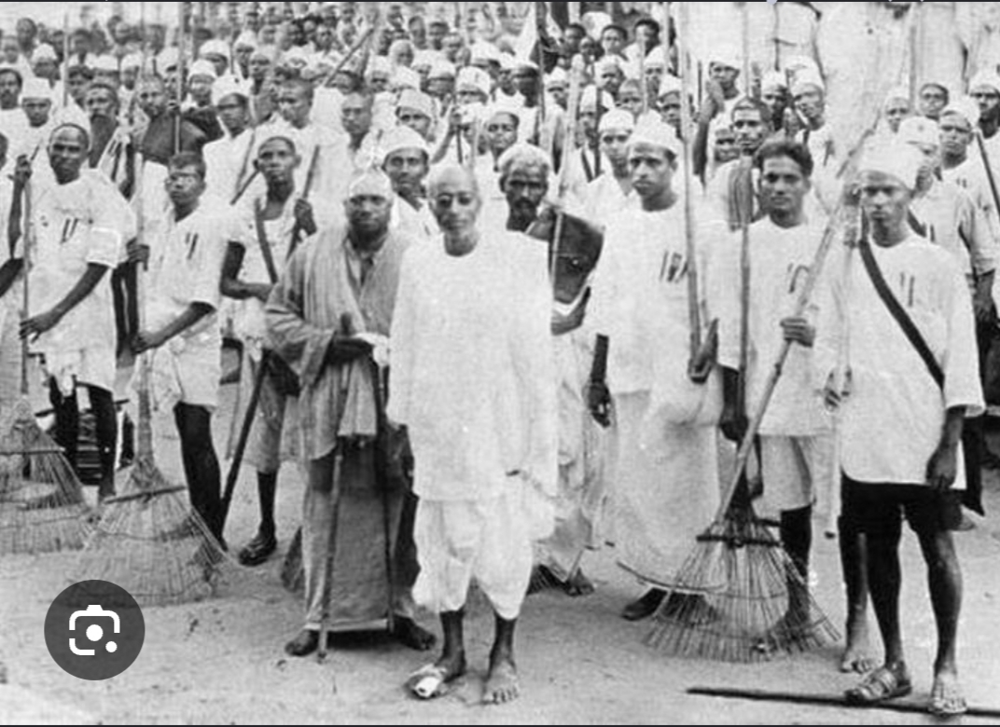
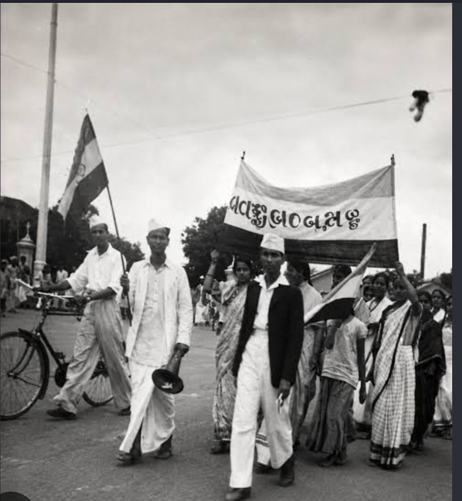
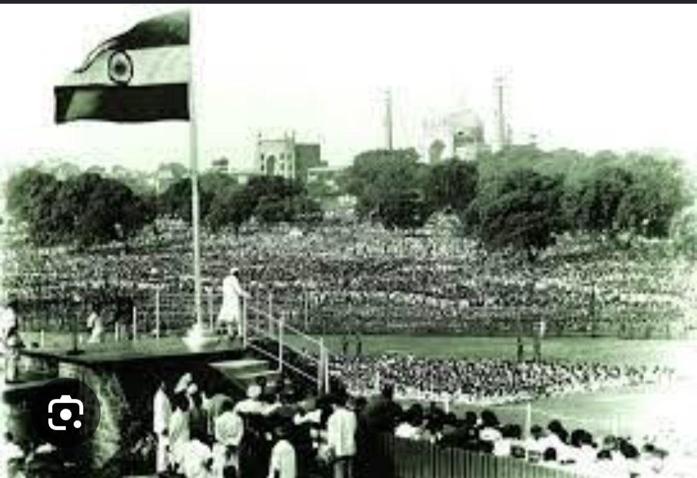

- Mahatma Gandhi
Mohandas Karamchand Gandhi, known as Bapu, was born on 2nd October 1869 in Porbandar, Gujarat, India. He is known as Father of the Nation. He fought for truth, non-voilence and freedom.


Age at Marriage: 13 Years
Wedding Date: May 1883
Wife: Kasturba Gandhi (She was 14 years old at the time of marriage)
Gandhiji's marriage was a child marriage arranged by his parents. He lovingly called Kasturba 'Ba'. She always supported him in the Satyagraha and freedom struggle. Their marriage lasted for 62 years. They lived a very simple and self-reliant life together.

The Gandhi family has always been a symbol of simplicity, truth and service.
Gandhiji went to London in 1888 to study law. In 1893 he went to South Africa. There he faced racism. He started his first Satyagraha there and fought for 21 years for Indians rights.
.🙊.🙉.🙈.

For farmers of Bihar. First Satyagraha in India.

Boycott of British goods, schools and courts.

240 miles walk to make salt and break British law.

Slogan 'Do or Die'. Last movement for freedom, The whole country rose against the British.
He always fought with Satyagraha, Truth and Non-violence. He made the British bow down without any weapons.

After the Second World War, the British became weak. Due to the pressure of the Quit India Movement and the Azad Hind Fauj, they realized it was impossible to hold India any longer. Then Viceroy Lord Mountbatten gave the plan of partition on 3 June 1947.
Under this plan:
🎉 On 15 August 1947, India became independent 🥳and two countries were formed - India and Pakistan. Jawaharlal Nehru gave his first speech from the Red Fort - "Tryst with Destiny".